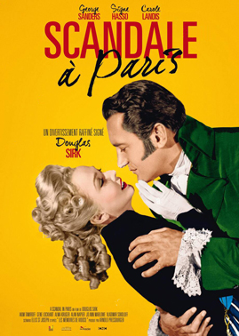
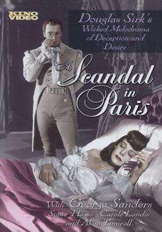
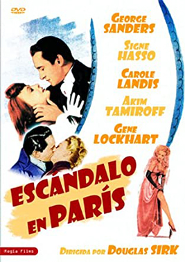

A Scandal in Paris
George Sanders
Carole Landis
Gene Lockhart
Alan Napier
Vladimir Sokoloff
Fritz Leiber
Fred Nurney
Julius Tannen (uncredited)
SYNOPSIS
The autobiography of elegant criminal, François Eugène Vidocq, from his birth in a French jail in 1775 to his appointment as Chief of Police of Paris where he intends to rob the city bank. Along the way, he escapes from jail with Emile, who becomes his partner in crime, poses as a Lieutenant to rob a showgirl of her ruby garter, and steals the jewels of a Marquise in whose home he's a guest.
He also poses as an artist's model for a portrait of St. George (Emile's face is the dragon's), and the Marquise's granddaughter falls in love, at first with his visage and then him. Can she help him slay his own dragons, especially when the showgirl reappears and the bank vault beckons?
Vidocq was a criminal in nineteenth century Paris who changed sides and became a leading detective. The story was previously filmed as Vidocq in 1939 - a French historical crime film directed by Jacques Daroy and starring André Brule, Nadine Vogel and René Ferté. The film is based on the memoirs of Eugène François Vidocq.
Vidocq is seen reading the memoirs of Casanova at the time of Napoleon's Egyptian campaign (1798-1801). However the memoirs were not published until 1822.


